未来品牌争夺的，不只是搜索排名，而是AI在回答问题时，会不会主动推荐你，并把你当作可信来源。
依据：Semrush × Adobe《AI Visibility Index 2026》，数据窗口为2026年1月至4月。
过去二十年，中国的外贸企业和跨境企业研究线上增长，最常问的问题是：我们在Google排第几？
进入生成式AI时代，这个问题正在失去解释力。
越来越多海外用户不再逐个打开搜索结果，而是直接向ChatGPT、Gemini等AI提问：哪个产品更适合我？这几家公司有什么区别？某个品牌是否可靠？
AI会替用户阅读、比较和筛选信息，最后给出一个经过压缩的答案。品牌能否进入这个答案，正在成为新的竞争变量。
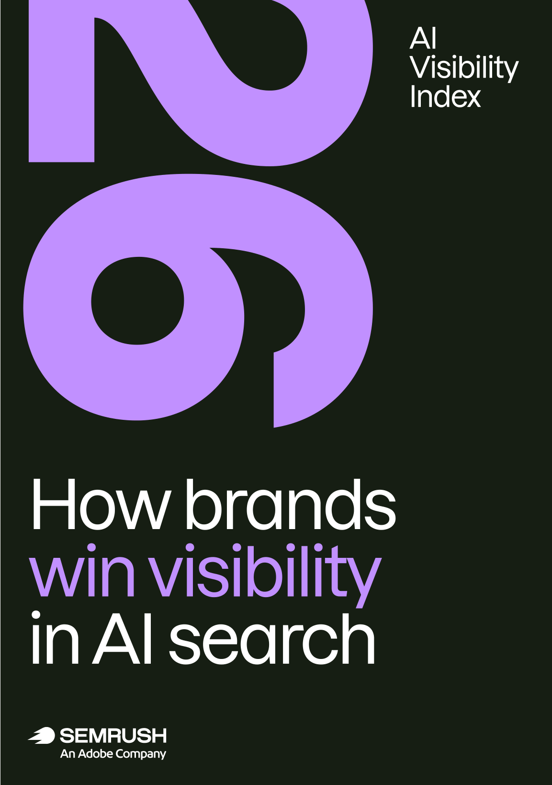
Semrush与Adobe联合发布的《AI Visibility Index 2026》，试图描述这一变化。报告分析了Semrush美国AI搜索数据库中的1.26亿条去重提示词，覆盖2026年1月至4月的ChatGPT、Gemini、Google AI Mode和Google AI Overviews，以及22个行业。
这份报告最值得关注的，并不是又提出了一套新的“AI优化技巧”。它真正揭示的是：品牌竞争正在从争夺搜索排名，逐渐转向影响AI如何理解、描述和推荐一个品牌。
01 品牌进入AI答案，存在两条不同的路径
传统SEO主要关注网站是否获得排名与点击。但在AI答案中，品牌至少存在两种不同的可见方式。
第一种是“品牌提及”。当用户询问“适合中小企业的电商平台有哪些”，AI在答案中直接说出Shopify，这就是一次品牌提及。用户未必点击任何链接，但Shopify已经进入了用户的考虑范围。
第二种是“内容引用”。AI在回答问题时，把某个网站作为信息来源，并展示对应链接，这就是一次引用。引用更接近传统搜索流量，因为它可能带来可以追踪的访问。
两者经常被混为一谈，实际上由不同机制驱动。品牌提及更多依赖品牌知名度、行业地位以及与用户问题的匹配度；内容引用则更依赖网站内容的专业深度、结构完整性和可信程度。
一个品牌可能经常被AI推荐，但官网几乎不被引用。Patagonia就是报告中的典型案例。它拥有很强的品牌提及，却不依赖官网链接获得存在感。反过来，Wikipedia经常被AI作为信息来源，却很少是答案真正讨论的对象。
报告进一步发现，在Google AI Overviews中，被提及品牌与被引用来源的重合度约为64%；到了Gemini，这个数字只有30%。
原报告把四个平台放在同一张图中比较，可以看到提及与引用来源的重合率从64%降至30%。
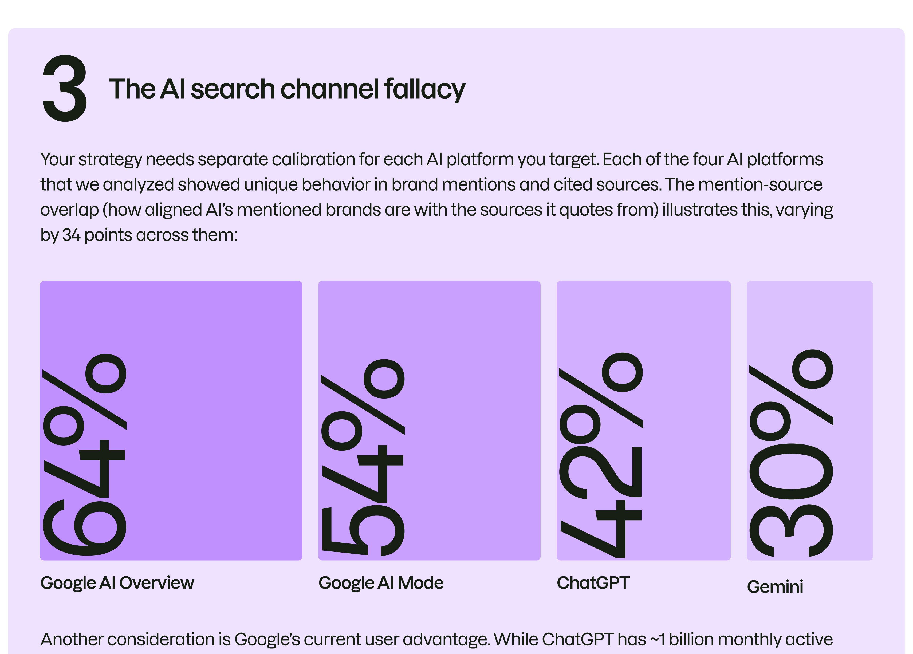
这意味着，“让AI推荐品牌”和“让AI引用官网”不能再被当成同一项工作。前者更接近品牌建设，后者更接近内容与信息基础设施建设。
02 AI搜索不是一个统一渠道
很多企业目前所谓的“AI搜索策略”，实际上只是观察品牌在ChatGPT中的表现。问题在于，ChatGPT不能代表整个AI搜索市场。
报告显示，四个平台在信息来源、回答方式和品牌偏好上存在明显差异。
| 平台 | 主要来源偏好 | 平均引用数 | 战略提示 |
|---|---|---|---|
| ChatGPT | Wikipedia、Reddit、社区讨论 | 15.4 | 维护权威资料与真实社区讨论 |
| Gemini | Google生态、购物与商业信息 | 3.3 | 重视Google产品与购物数据完整性 |
| Google AI Mode | YouTube、Facebook、本地信息 | 11.4 | 本地商家与服务品牌优先投入 |
| AI Overviews | YouTube、权威资料、搜索型答案 | 9.2 | 用简洁内容覆盖明确搜索意图 |
表1 四类AI搜索入口的信息来源差异。数据来源：Semrush × Adobe《AI Visibility Index 2026》 / 制表： · 2026-08
ChatGPT的每个回答平均引用15.4个来源，是四个平台中引用密度最高的；Gemini平均只引用3.3个来源，品牌想进入其有限的引用名单，竞争可能更加集中。
Google AI Overviews更接近传统搜索。报告显示，它接收到的查询平均只有24.6个字符，而其他三个平台接近58个字符。这是因为AI Overviews承接的主要是搜索关键词，其他平台接收的则更像完整的对话式问题。
查询方式不同，适合的内容自然也不同。面向AI Overviews，简洁的定义、操作步骤、产品说明和关键词意图仍然重要；面向ChatGPT，需要重视社区讨论和第三方权威资料；面向Google AI Mode，本地资料、视频与社交内容的作用更加突出。
所谓“一套内容适配所有AI平台”，很可能只是企业自己的想象。
03 内容数量正在让位于内容资产
过去几年，内容营销逐渐演变为规模游戏。企业建立关键词库，持续批量生产文章，希望覆盖尽可能多的搜索需求。生成式AI进一步降低了内容生产成本，也让这种策略更容易被复制。
当所有人都能快速生产大量文章时，文章数量本身就很难继续构成优势。
Semrush的研究显示，被AI大量引用的网站通常拥有某种难以替代的内容资产：
- IMDb拥有结构化的影视数据库；
- Investopedia拥有持续积累的金融知识体系；
以金融行业为例，AI更依赖专业教育与比较型网站，而不是泛新闻媒体。
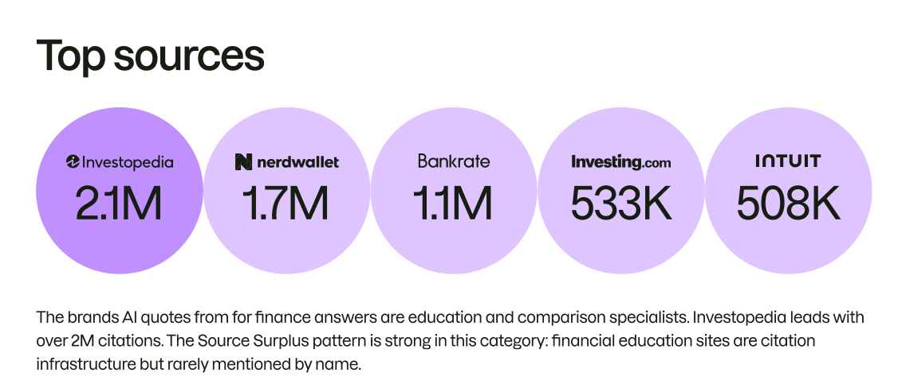
- Mayo Clinic和Cleveland Clinic拥有专业医学知识库；
医疗健康领域则呈现“双榜重合”：专业机构既是被提及品牌，也是主要信息来源。
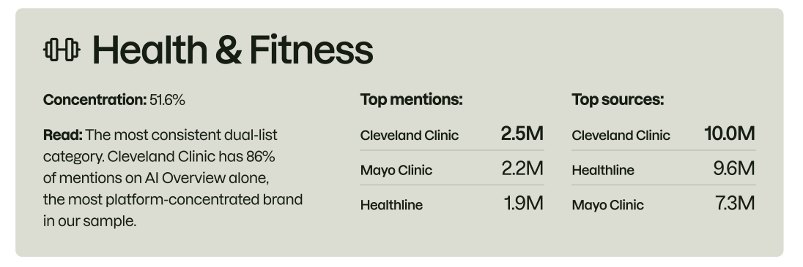
- Reddit拥有多年沉淀的真实用户讨论；
新闻与媒体行业高度集中，Reddit在提及与引用两端都占据压倒性位置。
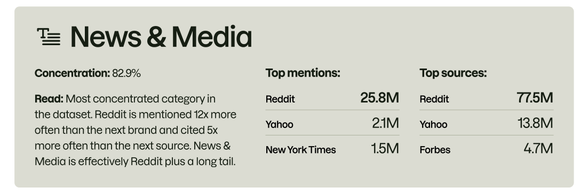
- Wikipedia拥有大规模协作形成的百科内容。
教育与知识查询中，Wikipedia的结构性优势更明显，头部来源差距显著。
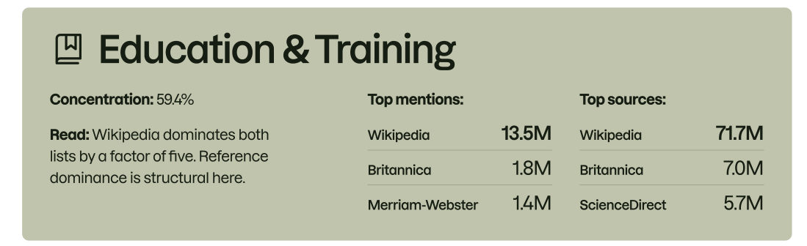
这些资产的共同特点，并不是“文章很多”，而是竞争者无法在短期内重建。
对普通企业来说，真正值得思考的问题因此变成了：我们的官网上，有什么是AI无法从其他网站重新拼出来的？
答案可能是第一方行业数据、长期积累的产品数据库、真实客户案例、专家知识库、价格指数、选购工具，也可能是一个拥有持续讨论的专业社区。
未来的内容竞争，很可能从“持续写文章”转向“持续建设知识资产”。文章会快速折旧，资产则有可能形成复利。
04 官网之外，存在一个更重要的“引用核心”
传统SEO让企业习惯把官网视为主要阵地。但AI在判断一个品牌是否值得推荐时，往往不会只听品牌自己怎么说。它还会阅读行业评测网站、专业媒体、社区讨论、视频平台和用户评价。
报告将每个行业中被AI反复信任和引用的一小组网站称为“Citation Core”，即“引用核心”。
- 美国软件行业的引用核心包括G2、Capterra、TrustRadius；
- 金融行业包括NerdWallet、Investopedia、Bankrate；
- 美妆行业包括Allure和Byrdie；
- 旅游行业则绕不开TripAdvisor。
报告把不同垂直行业的“默认可信来源”并列出来，显示引用核心具有明显的行业差异。
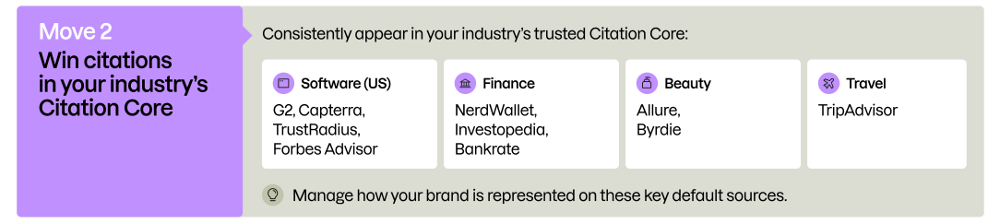
这些平台逐渐成为AI理解行业和品牌的默认资料库。
Patagonia的案例很有代表性。报告发现，Reddit以及OutdoorGearLab、REI、Switchback Travel等户外装备评测网站，共同形成了它的第三方信息网络。六家专业户外网站在AI答案中带来的品牌提及超过6.5万次，高于传统一级媒体的总和。
Patagonia案例进一步说明，稳定的第三方评测与社区讨论可以共同构成品牌的推荐基础。
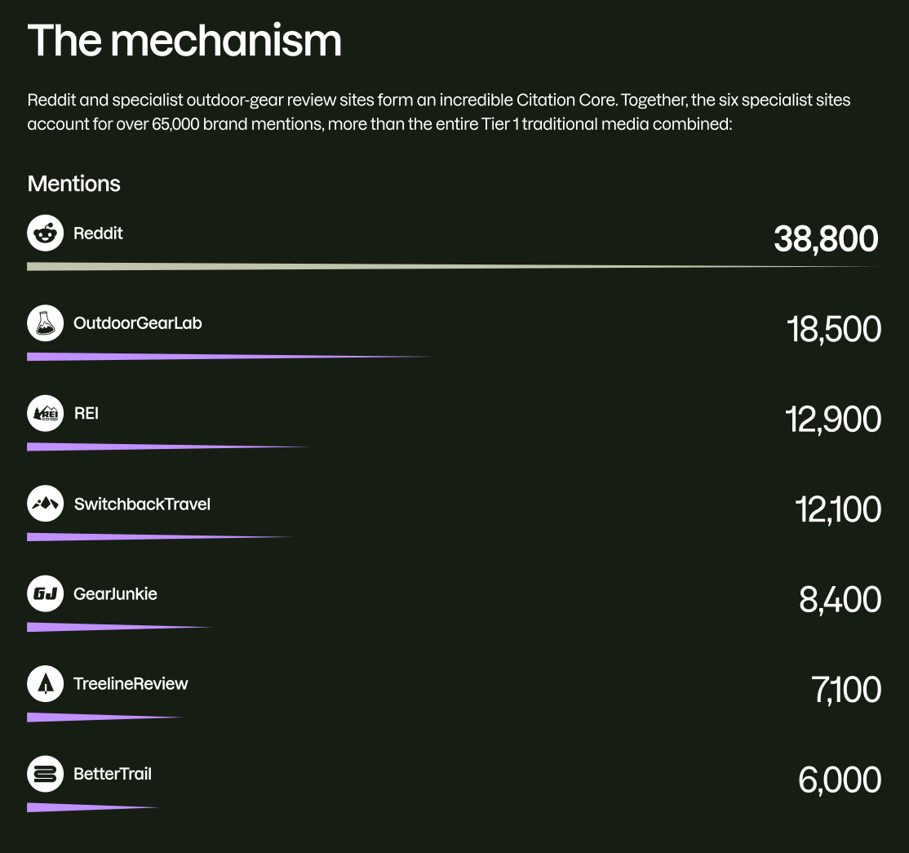
这并不是一个单纯的SEO结果。它来自Patagonia长期形成的产品体验、品牌定位、用户口碑和专业媒体评价。当多个独立来源使用相对一致的语言描述品牌，AI就更容易形成稳定判断。
由此看，AI可见度的竞争不会只发生在企业官网上。它还发生在那些企业无法完全控制，却可以通过产品、服务、关系和真实口碑持续影响的地方。
05 AI可见度最终会变成组织能力
如果AI对品牌的理解同时来自官网、媒体、社区、视频、用户评价和产品资料，那么这项工作就不可能只由SEO团队承担。
- 技术团队需要确保AI爬虫能够访问和理解网站。
- 内容团队需要建设专业、清晰、可引用的知识资产。
- 品牌与产品市场团队需要保证不同渠道对产品定位的表述一致。
- 公关团队需要维护专业媒体和行业平台上的品牌信息。
- 客户服务与社区团队则直接影响用户评价和公开讨论。
因此，报告把CMO面临的变化归纳为四项组织动作，核心是打通测量、内容、平台与协作。
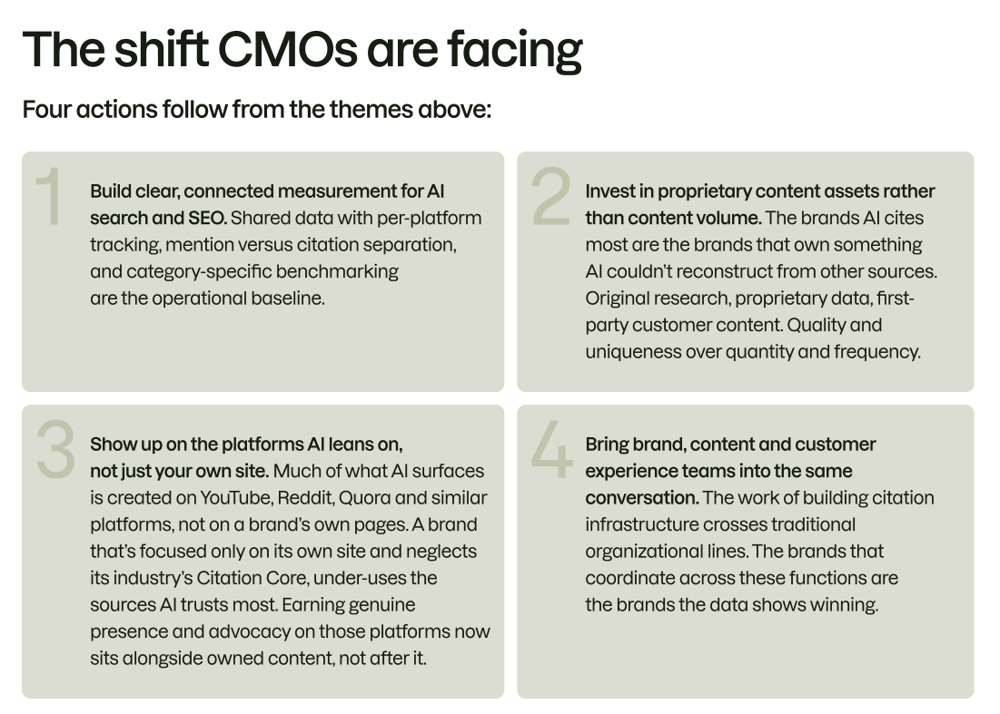
报告将品牌的AI可见度拆成四层。下面的原图同时标出了各层的判断问题与主要责任团队：
四层并不是彼此独立的指标，而是一条从“能被找到”到“愿意推荐”的递进链条。
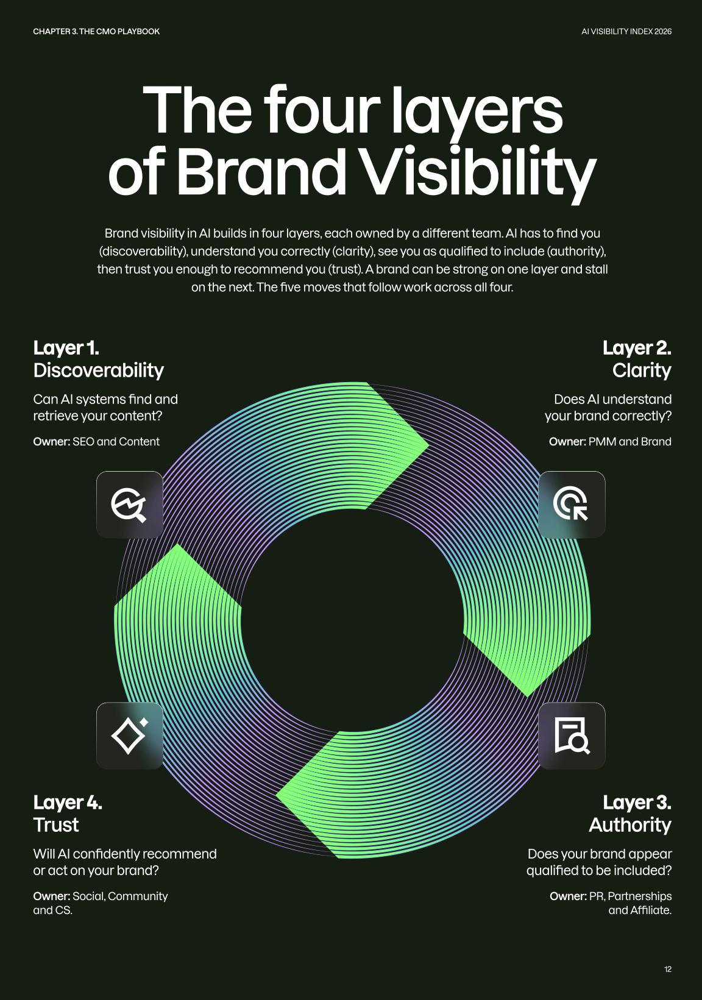
- 可发现：AI能否抓取和读取你的内容；
- 清晰度：AI能否准确理解品牌；
- 权威性：AI是否认为品牌有资格进入答案；
- 信任度：AI是否愿意进一步推荐品牌。
任何一层出现问题，品牌都可能在AI答案中消失，或者以错误的方式出现。
报告中的另一组调查数据也值得注意：在481名营销人员中，45%表示无法准确衡量品牌在AI答案中的可见度，只有9%能够衡量所有重要指标。
而在已经将SEO与AI搜索工作充分整合的团队中，81%表示从AI平台获得了更多流量或线索；工作流程完全分离的团队中，这一比例为36%。
这组对比显示，报告观察到的差异更像组织协同结果，而不只是某项单点技术优化。
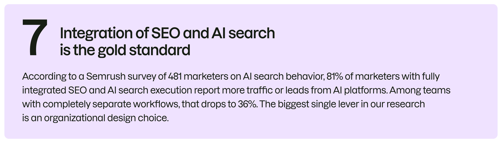
这组数据只能说明相关性，不能直接证明组织整合必然带来增长。但它至少提醒企业：AI搜索不是在原有SEO报表里增加一列数据就可以解决的问题。
06 企业现在可以做什么？
与其立刻启动一场庞大的“AI搜索改造”，不如先建立一个可观察、可验证的基础。
第一步，选择与业务真正相关的用户问题。不要只搜索品牌名称。应该测试真实客户在购买前会提出的问题，例如产品适用场景、品牌差异、可靠性与方案选择。
第二步，分别记录四类信息。品牌是否被提及；品牌排名和描述是否准确；AI引用了哪些网站；哪些竞争者经常与品牌同时出现。
第三步，找出本行业的引用核心。企业需要知道，AI在回答行业问题时，究竟反复依赖哪些第三方网站，并检查其中的品牌描述是否准确、信息是否过时。
第四步，选择一项真正有积累价值的内容资产。与其继续扩大普通文章产量，不如集中建设原创数据库、专业知识库、持续更新的行业研究，或能够产生真实用户内容的社区。
第五步，将提及和引用分开衡量。提及反映品牌是否进入用户认知，引用反映内容是否成为AI的信息基础。两者都重要，但对应的行动不同。
07 关于这份报告
这份研究的样本规模很大，但结论仍然需要谨慎使用。
研究主要基于美国市场，只覆盖2026年1月至4月。AI模型、搜索产品和信息来源权重仍在快速变化，几个月后的平台表现就可能不同。
报告也没有覆盖中国市场的主流AI产品。百度、豆包、DeepSeek、腾讯元宝、夸克等平台的信息来源与产品机制，未必与ChatGPT或Google一致。
此外，Semrush本身提供AI可见度监测产品。因此，这既是一份行业研究，也带有明确的市场教育和产品推广目的。报告中的策略框架值得参考，但企业没有必要照搬其中的工具方案。
真正具有长期价值的，不是某个平台当前更偏爱YouTube还是Reddit，而是报告背后的一个更稳定的判断：AI正在成为品牌与消费者之间的新中介。
它会把散落在官网、媒体、社区、评价网站和用户讨论中的信息重新组合，形成一个看似完整的品牌答案。
企业无法直接控制这个答案，却可以影响构成答案的证据。
未来品牌竞争的一部分，正是建设这些证据：让AI能够找到你，正确理解你，相信你，并在关键问题上愿意推荐你。
报告来源：Semrush × Adobe, AI Visibility Index 2026。本文为报告内容解读，不构成对任何平台或工具的推荐。